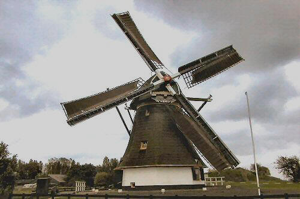

"De Schaapweimolen"
|  | Reeds in 1445 is er sprake van windbemaling in het gebied Noord-, Plaspoel-, Schaapweipolder te Rijswijk (Z-H). In 1601 kreeg de Schaapweipolder, 129 ha. groot een eigen wipmolen die in 1825 volledig verbrandde. Al in 1826 kon de nieuwe opvolger opgeleverd worden : de huidige achtkante poldermolen, waarin de molenaar met zijn (grote) gezin woonde. In 1882 bouwde men een klein stenen huisje naast de molen, ingericht als zomerverblijf, keuken en wasgelegenheid. Op het kleine molenerfje stond ook een schuurtje als onderkomen voor een varken, geit, konijnen en kippen. Er kwam een einde aan de autonome windbemaling van de Schaapweipolder door het dempen van de molensloot door de Duitsers in 1944 ten behoeve van een antitankgracht. Na een fusie met de naburige Plaspoelpolder nam diens motorgemaal langs de Schie de waterbeheersing over. In 1946 vertrok de weduwe van de laatste molenaar Petrus de Lange, die in 1943 was overleden, met haar inwonende zoon Theo uit de molen, die daarna snel verpauperde. In 1959 kocht de gemeente Rijswijk de molen, en na een grote restauratie was deze in 1960 weer geheel maalvaardig. Een andere zoon van de laatste molenaar werd gevraagd op vrijwillige basismolenaar te worden en hij heeft dit tot op hoge leeftijd, tot 1983 gedaan. Zijn opvolger was Nico van Weelde, die tot 1 juni 2001 molenaar was. Thans is er een nieuwe molenaar die de molen zeer regelmatig laat draaien. |
| D a
ar de molen in het tracé van de nieuwe rijksweg 19 (A4) stond werd de molen in 1988 1,5
km. westwaarts verplaatst naar de Hoekpolder, de huidige plaats. Na een kleine
restauratie, de bouw van een nieuw stenen huisje en een buiten-wc boven de sloot, fungeert
de molen nu als stand-by in de bemaling van de gezamenlijke Hoek-, Plaspoel-,
Schaapweipolder, onder beheer van de huidige eigenaar : het Hoogheemraadschap van
Delfland. De molen is regelmatig op zaterdag geopend en gratis te bezichtigen. Bekijk hier de Schaapweimolen gemaakt met een drone. Bekijk hier de Schaapweimolen gemaakt met een drone door Diedrik Willems. |
Technische gegevens
| naam adres bouwjaar bestemming plaats eigenaar molenaar Openingstijden |
"Schaapweimolen" Molenwetering 2 Rijswijk 1826 poldermolen Rijswijk het Hoogheemraadschap van Delfland sinds 1988 Willem Hazeu (tel 06-19662701) Wanneer de molen draait |
Constructie
| voet romp kap wiekenkruis vlucht wiekvorm bovenas kruiwerk vang inrichting opvoerhoogte wateras |
veldmuren 190 cm. hoog grenen achtkant gedekt met riet gedekt met riet gelaste stalen roeden, Fabr. Derckx, Beegden binnenroede: nr. 590 buitenroede: nr. 589 (beide uit 1989) 20,60 m. Oudhollands met fokwieken en remkleppen gietijzer 4,70 m. lang uit 1886 Fabr. Pr. van Oranje nr.965 42 houten rollen en kruirad Vlaamse blokvang met vangtrommel ijzeren scheprad, Ø 4,70 m. breedte 54 cm. 80 cm. gietijzer, 1875 Fabr. Pr. van Oranje nr. 965 |
Overbrengingen
| aantal kammen bovenwiel aantal staven bovenschijfloop aantal staven onderschijfloop aantal kammen onderwiel overbrengingsverhouding |
54 31, steek 13,0 cm. 19 72, steek 15,0 cm. 2,18 : 1 |
Versieringen
| sierlijke
baard, schaapafbeelding en initialen van de bouwers FLM (Frederik Lakeman) en JB (Jan Blok), 1826 |
 Deze pagina is gemaakt op 20-12-2006 Tijd: 21:10 uur.
Deze pagina is gemaakt op 20-12-2006 Tijd: 21:10 uur.

Laatste wijziging: